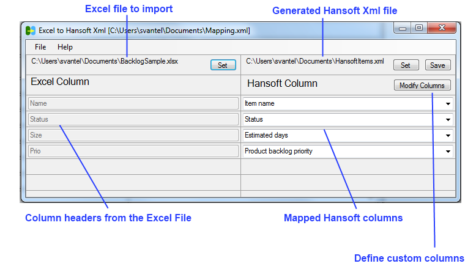

This is a standalone utility that allows you to convert an Excel file (.xlsx) to the Hansoft XML format for input into Hansoft.
This utility is currently targeted towards importing into the product backlog section of Hansoft and it may or may not be suitable for other purposes.
It is possible to import into most columns in Hansoft including custom columns of different types but some columns are not supported currently, most notably the Release Tag column and the Linked to items column.
You can at most map 40 columns currently.
hsimport by Svante Lidman (Hansoft AB) is licensed under a Creative Commons Attribution-ShareAlike 3.0 Unported License. This program is not part of the official Hansoft product or subject to íts license agreement. The program is provided as is and there is no obligation on Hansoft AB to provide support, update or enhance this program. Questions can be sent to svante.lidman@hansoft.se and will be answered when other obligations so permit.
The .NET Framework 4.5 must first be installed to run this program. You can download it free of charge here.
The program does not come with an installer but you simply copy the files included in the distribution zip-file to a suitable location and double click on hsimport.exe to start the program and display its main GUI.
With the program you can create a mapping that maps the different columns of an Excel file onto different columns in Hansoft. To create a mapping you need to first select the Excel file with data that you want to import into Hansoft. This is done by clicking the "Set" button in the left column. When the Excel file is selected you will be asked whether or not the first row in the Excel sheet is a header that shouldn't be imported into Hansoft. Once the Excelfile is read, the left column will be populated with the values from the first row in the Excel sheet. A number of comboboxes will also be activated in the right column and from these you select to which Hansoft column the different Excel columns should be mapped.
If the data in one or several columns should be mapped to custom columns in Hansoft then these columns must first be defined in Hansoft. Then you need to define the column in hsimport. This is done by clicking the "Modify Columns" button and then a dialogue that lists the exisiting custom column definitions will be displayed and you can the edit/delete these or create new ones. When you create a new custo column definition the most important fields to fill in correctly are:
Code Name: This is the formal Hansoft name for the column. If you fill out the Display Name with the name as shown in the column header in the Hansoft GUI then then Code Name will be automatically filled out correctly.
Type: The type must be the same as the corresponding type in Hansoft.
Options: Used to the define the different options for single and multiselect dropdown fields in Hansoft.
When a custom column has been defined it will be available for mapping in the comboboxes on the main screen in the same way as the built in columns.
To generate Hansoft Xml, click the "Save" button in the right column. You will be then be prompted for a file name. Alternatively you can first set the file name by clicking the "Set" button in the right column. The saved file can then be imported into Hansoft.
If you want to save your mapping to reuse/reapply it at a later time you can Save/Open mapping definitions with the menu items found under the File menu.
Text, Hyperlink, Number, Date and Times columns: Formatted the same way as when displayed in Hansoft
Enumerable columns (Status, Risk etc.): Formatted the same way as when displayed in Hansoft. Multiselect values should be separated by semicolons. This is valid for both built in and custom columns.
Assigned To columns: A semicolon separated list of Hansoft user names
People column: A semicolon separated list of Hansoft user and/or group names
| Date | Version | Comment |
| Feb 28, 2013 | 1.11 | More accurate generation of the code name for custom columns when the display name contains characters that are illegal in Xml names. |
| Feb 23, 2013 | 1.1 |
Can now map up to 40 columns User story flag is now set on imported items when the User story column in Hansoft is mapped Works in all Windows DPI settings now Xml declaration added to the generated XML ensuring utf-8 encoding |
| Feb 18, 2013 | 1.0 | First version |